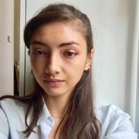
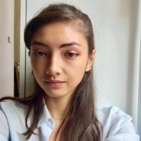

About
Deep learning II is taught in the MSc program in Artificial Intelligence of the University of Amsterdam. In this course we study the theory of deep learning, namely of modern, multi-layered neural networks trained on big data. The course is coordinated by Efstratios Gavves, Erik Bekkers, Wilker Aziz Fereira and Christos Athanasiadis.


And the lectures for the course are: Erik Bekkers, Eric Nalisnick, Sara Magliacane, Yuki Asano, Wilker Aziz Ferreira and Stratis Gaves.


The Teaching Assistants (TAs) are:
Christos Athanasiadis, Leonard Bereska, Mohammad Mahdi Derakhshani, Bryan Eikema, Danilo De Goede, Cyril Hsu, David Knigge, Miltos Kofinas, Putri Linden, Cong Liu, Ivona Najdenkoska, Angelos Nalmpantis, Samuel Papa, David Ruhe, Riccardo Valperga


 
